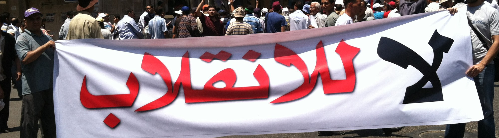
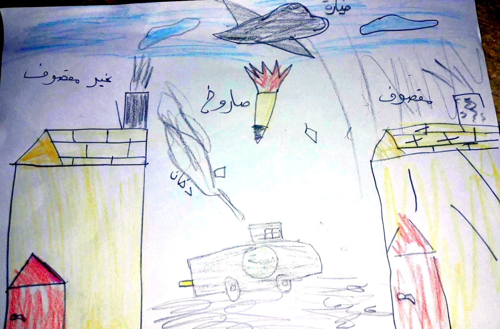

I use empirical methods—surveys and experiments in conflict-affected settings, archival and historical records, and original cross-national datasets—to study three sets of questions about how states form, change, and wage war.
Published articles are available for download from the Duke Law Scholarship Repository.

Marchers carrying a banner reading “No to the coup” (لا للانقلاب), Cairo, July 2013 (Revkin 2013)
This line of research asks how regimes change, how governing institutions build or lose legitimacy in the eyes of the governed, and how law is used to manage, and sometimes manipulate, public memory of the past. A related strand examines how the institutions that distinguish democracies, including judicial independence, free and fair elections, and the separation between military and police, respond to pressures including polarization, war and other national emergencies, and autocratization.
Methods Original cross-national datasets · survey experiments and focus groups · archival and historical records
- Revkin, Mara R., Ala Alrababah, and Rachel Myrick. 2024. “Evidence-Based Transitional Justice: Incorporating Public Opinion into the Field, with New Data from Iraq and Ukraine.” Yale Law Journal 133: 1582–1675.
- Revkin, Mara R., and Olivia Wang. 2026. “Between Memory and Oblivion: The Empirical and Legal Limits of the ‘Duty to Remember.’” Working Paper.
- Revkin, Mara R. Forthcoming 2027. “Transitional Justice in Authoritarian Contexts.” In Oxford Handbook on Law and Authoritarianism, ed. Cora Chan, Madhav Khosla, Benjamin Liebman, and Mark Tushnet.
- Revkin, Mara R. 2026. “‘Operations Other Than War’: The Rise of Domestic Military Deployments, 1992–2026.” Working Paper.

Police car in Bartella, Iraq (Revkin 2018)
A long tradition in social science holds that war makes states, but that literature has focused on armies, taxation, and bureaucracies. My work examines the legal institutions—courts, codes, and police—through which wartime authorities govern, in two settings rarely studied together: a twenty-first-century insurgency in the Middle East and the nineteenth-century American capital. A second strand traces what happens after the fighting stops: how divided communities decide whether to punish or reintegrate those accused of collaboration, and how humanitarian assistance shapes reconstruction in fragile settings.
Methods Archival research · conjoint and survey experiments · household surveys in conflict-affected settings
- Revkin, Mara R., and Gage Gramlick. 2026. “The Civil War Origins of Fiscal Policing: Evidence from the District of Columbia.” Working Paper.
- Revkin, Mara R., and Kristen Kao. 2024. “No Peace Without Punishment? Reintegrating Islamic State Collaborators in Iraq.” American Journal of Comparative Law 71: 989–1032.
- Kao, Kristen, and Mara R. Revkin. 2023. “Retribution or Reconciliation? Post-Conflict Attitudes Toward Enemy Collaborators.” American Journal of Political Science 67: 358–373.
- Dill, Janina, Marnie Howlett, Carl Müller-Crepon, and Mara R. Revkin. 2026. “Resistance, Collaboration, and Ethnic Bias: Evidence on Social Cohesion in Wartime Ukraine.” Working Paper. Revise and Resubmit.
- Levy, Gabriella, and Mara R. Revkin. 2025. “Introducing the Fragility Index: A Tool for Evidence-Based Transitional and Recovery Programming.” International Organization for Migration in South Sudan and Duke University, 1–77.
- Revkin, Mara R. 2022. “When Do ‘Closed Camps’ Become Prisons by Another Name?” Yale Journal of International Law Online 47: 57–70.

A child’s drawing of an airstrike, labelling one house “bombed” (مقصوف) and the other “not bombed” (غير مقصوف), displacement camp east of Mosul, Iraq (Revkin 2017)
This work concerns the conduct of war: how civilians judge the armed forces fighting around them, how international humanitarian law regulates—and fails to regulate—the use of military force, and what is owed to those harmed, whether symbolic, in the form of apologies and memorialization, or material, in the form of compensation and investment in reconstruction.
Methods Original datasets built from military strike reports · satellite imagery · conjoint experiments, interviews, and focus groups
- Krick, Benjamin, Jonathan Petkun, and Mara R. Revkin. 2025. “Civilian Harm and Military Legitimacy in War: Evidence from the Battle of Mosul.” International Organization 79: 332–357.
- Hathaway, Oona A., Azmat Khan, and Mara R. Revkin. 2025. “The Dangerous Rise of ‘Dual Use’ Objects in War: History, Evidence, and the Case for Reform.” Yale Law Journal 134: 2645–2750.
- Dill, Janina, and Mara R. Revkin. 2026. “The Moral Logic of Blame for Civilian Casualties: Evidence from Iraq.” Working Paper.
For a complete list of papers and publications, please see my C.V. or visit my Google Scholar page.